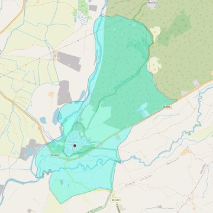

Santa María Magdalena
- Arciprestazgo
- Valdemoro
- Población
- Titulcia
- Dirección postal
- c/ Grande, s/n
- Código postal
- 28359
- Extensión
- 10,10 km² (1.010 ha)
- Teléfono
- 918 010 150
- Correo electrónico
- smmagdalena-titulcia@diocesisgetafe.es
- Información demográfica
- De la parroquia · De la población (Titulcia) · Del arciprestazgo (Valdemoro)
- Dirección corta
- charlie-diaz-azarola.github.io/geoestadistica/p/085


Descargar mapaLímites según decreto
Los del término municipal
¿Algún dato de esta parroquia es incorrecto o ha cambiado? Comuníquenoslo.